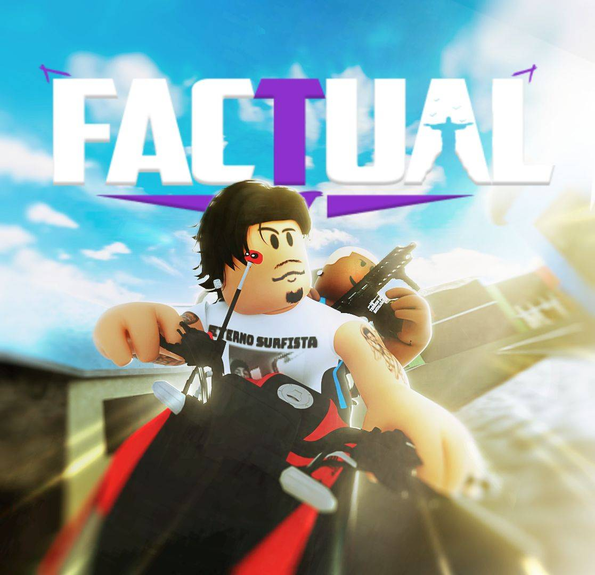

Manualda Staff
Ser staff é um privilégio, não um direito. Regras, comandos e orientações para administrar o Factual RJ com responsabilidade, imparcialidade e profissionalismo.

Modo discreto
Hacker só se solta quando acha que não tem ninguém olhando.
Por isso a equipe joga como qualquer jogador. Quando ninguém sabe que há admin online, quem usa cheat age sem medo, e fica bem mais fácil pegar com prova.
:track [jogador]
Funciona como um ESP: acompanha a posição do jogador em tempo real, sem invisível, sem voo e sem god.
Como um player qualquer
Entre como bandido ou policial e jogue normalmente. Nada de invisível, god, fly ou speed sem necessidade.
Só com alvo definido
Ligue recursos administrativos apenas para telar um jogador específico. Terminou? Desligue e volte ao normal.
Fora do team Staff
Dê prioridade a não entrar no team de staff dentro do jogo. Ele mostra que a equipe está online.
Faça
- Jogue normalmente como bandido ou policial.
- Use
:trackpara acompanhar suspeitos. - Peça uma telagem pela aba Telagem do painel.
- Reúna provas antes de agir.
- Volte ao modo normal assim que terminar.
Evite
- Ficar invisível ou voando sem um alvo para telar.
- Usar
:god,:flyou:speedem combate. - Entrar no team Staff sem necessidade.
- Deixar claro no chat que há staff online.
- Usar recursos de admin em proveito próprio.
Esta diretriz reforça as regras 3.2 (Fiscalização de Jogadores Suspeitos) e 3.3 (Gameplay Normal) do regulamento.
Fundamentos
O papel da staff
Seja exemplo
Mantenha postura profissional mesmo diante de provocações. Desrespeitar, provocar, perseguir ou praticar bullying é proibido.
Trate todos igual
Policiais e bandidos recebem a mesma atenção. Amigos e conhecidos não ganham tratamento especial.
Guarde o que é interno
Conversas da Staff, denúncias confidenciais e procedimentos administrativos não saem da equipe sem autorização.
Aborde com motivo
Toda abordagem precisa de justificativa legítima, ligada ao cumprimento das regras.
Como atender uma ocorrência
- EntendaLeia a denúncia ou observe o jogador.
- Tele com discriçãoUse
:trackou a aba Telagem do painel. - Reúna provasVídeos, prints ou observação direta.
- Aja pelo painelAbra com a tecla K ou com
/painelban. - RegistreInforme no canal indicado pela coordenação.
Não consegue resolver? Encaminhe a outro membro da Staff. Ignorar uma ocorrência de propósito é proibido.
Glossário
- Telar
- Observar de perto um jogador suspeito de exploit, cheat ou infração, para reunir provas.
- ESP
- Recurso que mostra onde o jogador está. No servidor, é o
:track. - Exploit e cheat
- Falha do jogo ou programa usado para trapacear. Hackers e exploiters têm punição mais pesada.
- Combat log
- Sair do jogo durante uma situação de combate.
- Modo administrativo
- Estado em que o admin usa recursos como invisibilidade e voo. Só ao telar alguém.
- Team Staff
- Equipe de staff dentro do jogo. Entrar nela mostra aos jogadores que há admin online.
- CmdBox
- Caixa por onde todos os comandos administrativos são executados (
:cmdbox). - Ocorrência
- Situação reportada ou observada que exige atendimento da Staff.
- Coordenação
- Avalia a Staff, revisa decisões contestadas e indica o canal de registro.
Regulamento geral
A Staff do Factual RJ é responsável por garantir que o ambiente seja justo, divertido e respeitoso para todos os jogadores. Todos os membros devem exercer suas funções com responsabilidade, imparcialidade e profissionalismo.
Disposição final
Todos os membros da Staff do FACTUAL RJ deverão conhecer e cumprir este regulamento. O desconhecimento das regras não será considerado justificativa para o descumprimento.
O objetivo da administração é manter um ambiente justo, organizado e respeitoso para todos. O cargo deve ser utilizado para ajudar a comunidade, e nunca para obter privilégios pessoais.
Painel /painelban
Kick, ban e desbanir ficam todos no painel de punições do jogo. Abra, escolha a aba e faça tudo por ali. A ilustração abaixo é clicável para você conhecer cada aba.
/painelban. A tecla K também fecha.Painel de punições
Staff • Factual RJ • Kick, Ban e Ban IPIlustração do painel com dados de exemplo. Nicks, datas e motivos são fictícios.
Comandos
Busque pelo nome ou filtre por categoria e copie o comando para o :cmdbox. Para kick, ban e desbanir, use o painel /painelban.
Ajuda
Posso jogar como bandido ou policial sendo admin?
Pode, e é o esperado. Durante o serviço, jogue como qualquer outro jogador, sem ficar em modo administrativo.
Quando posso usar invisível, fly ou god?
Só ao telar um jogador específico, com finalidade administrativa legítima. Terminou a telagem, volte ao normal. Nunca use esses comandos para ganhar vantagem em tiroteios, perseguições ou confrontos.
Por que evitar o team Staff?
Porque ele mostra que há admin online. Quem usa cheat se solta quando acha que ninguém está olhando, e isso facilita pegar com prova.
Como telar sem aparecer?
Use o :track [jogador], que funciona como um ESP, ou solicite uma telagem pela aba Telagem do painel.
Onde abro o painel de punições?
Aperte a tecla K ou digite /painelban. A mesma tecla fecha o painel.
Um jogador contestou uma decisão minha. E agora?
Encaminhe o caso à coordenação para revisão. Se a denúncia envolver você diretamente, outro membro da Staff deve analisar.
Não consigo resolver uma ocorrência.
Encaminhe a situação a outro membro da Staff. Ignorar ocorrências de propósito, para favorecer alguém ou fugir da responsabilidade, é proibido.
Vou ficar ausente por um tempo.
Avise a coordenação com antecedência, sempre que possível. Ausências justificadas são avaliadas individualmente.
Posso emprestar minha conta ou permissões?
Não. Emprestar contas administrativas ou compartilhar credenciais pode levar à demissão imediata. Cada membro é responsável pela segurança da própria conta.
O que acontece se eu descumprir o regulamento?
As consequências vão de advertência interna a suspensão temporária, rebaixamento e demissão, conforme a gravidade e as provas. Veja a seção 7 do regulamento.